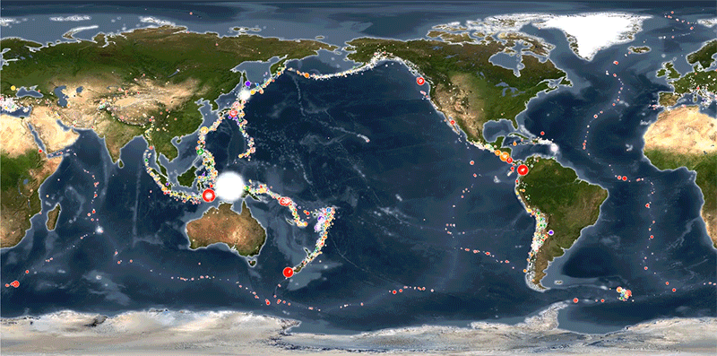

EARTHQUAKE ANALYSIS USING PYTHON

The National Earthquake Information Center (NEIC) determines the location and size of all significant earthquakes that occur worldwide and disseminates this information immediately to national and international agencies, scientists, critical facilities, and the general public. The NEIC compiles and provides to scientists and to the public an extensive seismic database that serves as a foundation for scientific research through the operation of modern digital national and global seismograph networks and cooperative international agreements. The NEIC is the national data center and archive for earthquake information.
This dataset includes a record of the date, time, location, depth, magnitude, and source of every earthquake with a reported magnitude 5.5 or higher since 1965.
Columns:
-
1. Date
2. Time
3. Latitude
4. Longitude
5. Type
6. Depth - Depth at which earthquake occurred
7. Depth Error - +1/-1 or 2km is
8. Depth Seismic Stations - Stations at a certain depth where earthquakes are recorded
9. Magnitude Magnitude Type can be based on any of the following:
ML: Local (Richter) magnitude - The Richter magnitude of an earthquake is determined from the logarithm of the amplitude of waves recorded by seismographs.
MS: Surface wave magnitude scale - It is based on measurements in Rayleigh surface waves that travel primarily along the uppermost layers of the Earth.
MW (Mw): Moment magnitude scale - It is a measure of an earthquake's magnitude ("size" or strength) based on its seismic moment (a measure of the "work" done by the earthquake).
MD (Md): Duration magnitude/signal duration - It is based on the realization that on a recorded earthquake seismogram, the total length of the seismic wavetrain ,reflects it's size.
10. Magnitude Error
11. Magnitude Seismic Stations
12. Azimuthal Gap
13. Horizontal Distance
14. Horizontal Error
15. Root Mean Square
16. ID
17. Source
18. Location Source
19. Magnitude Source : Harvard University Seismic Station (HRV) , US Tsunami Program
20. Status